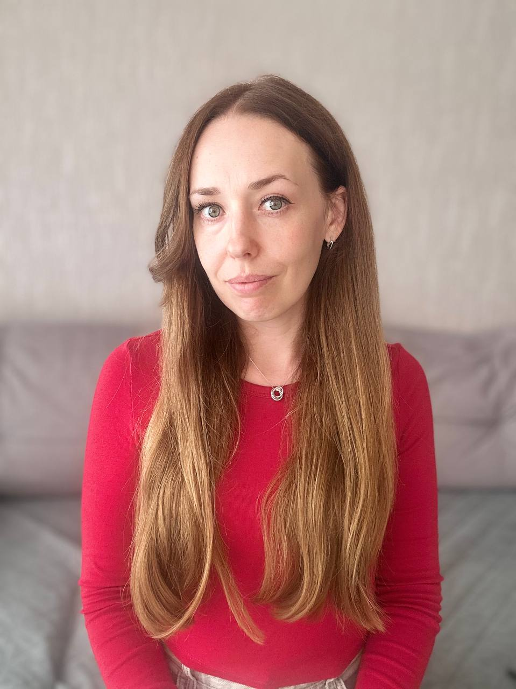
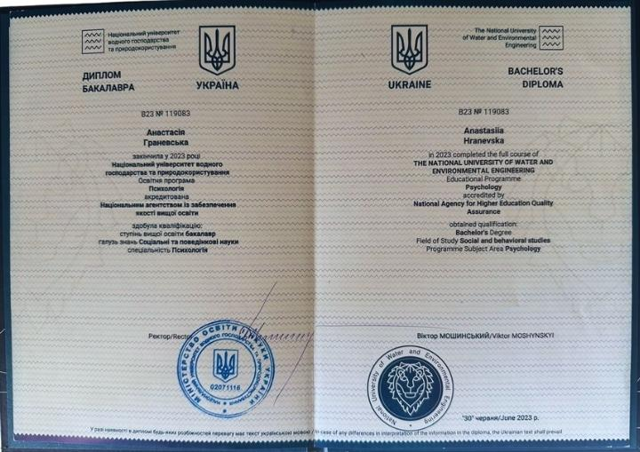
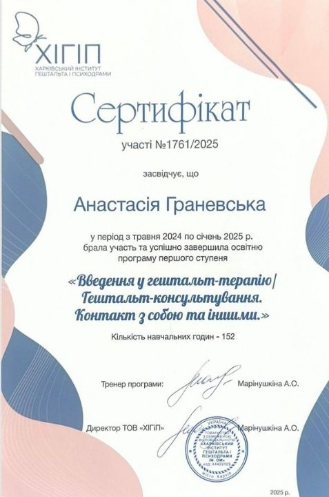
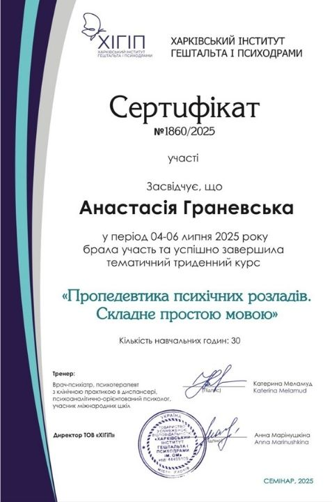
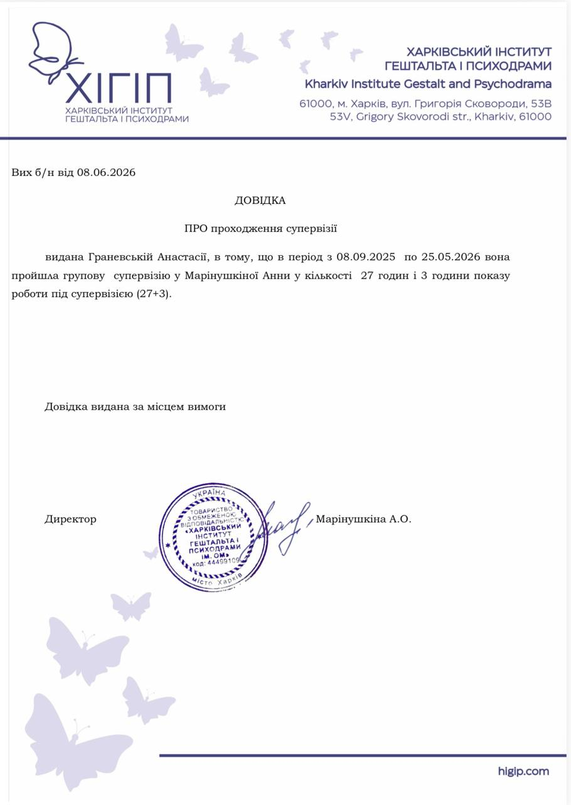
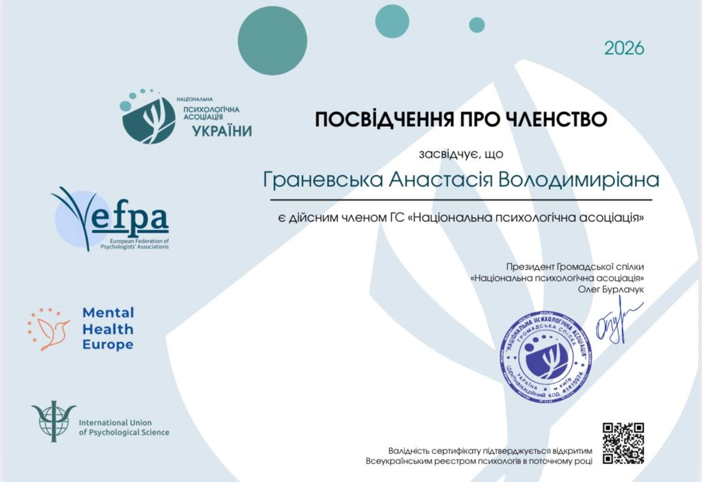
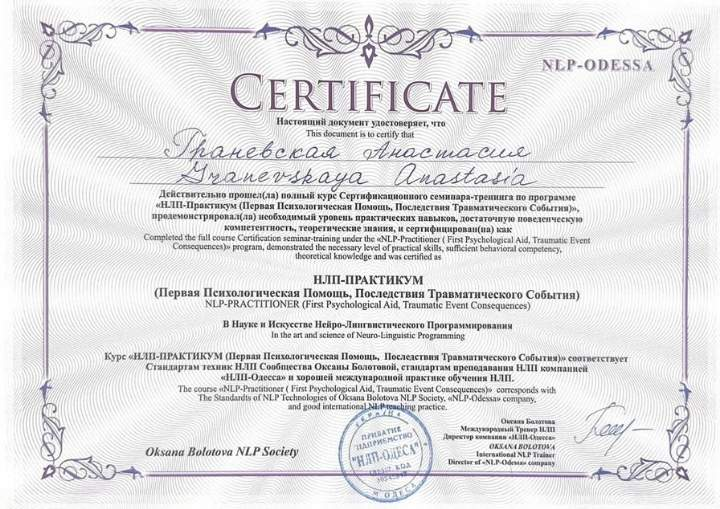
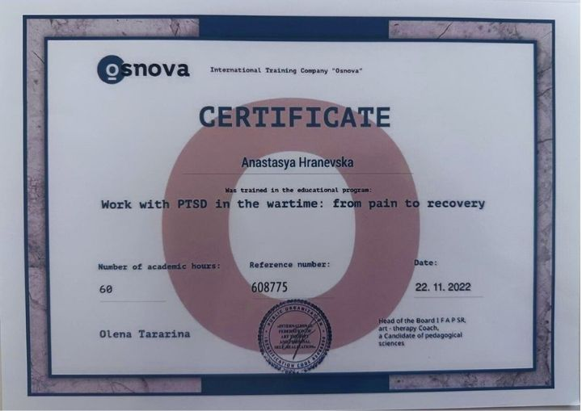
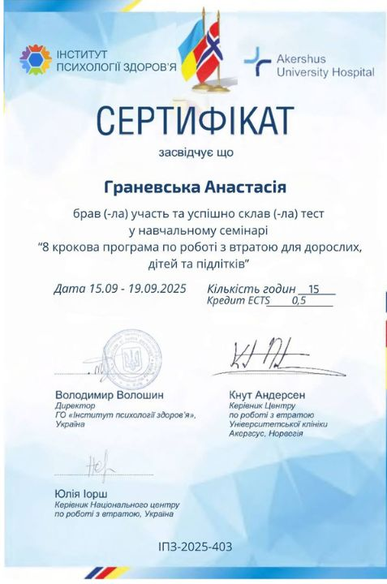

Індивідуальний підхід
Гештальт-терапія допомагає не лише зменшити симптом, а й глибше зрозуміти свої почуття, потреби та спосіб взаємодії зі світом.

(Нельсон Мандела)

Привіт, мене звати Анастасія.
Понад десять років свого життя я проходила військову службу у Збройних Силах України, з них сім років - на посаді офіцера-психолога. Сьогодні я продовжую свою професійну діяльність у приватній практиці. Психологію я обрала свідомо: для мене це не просто професія, а спосіб бути поруч із людьми тоді, коли боляче, важко і здається, що сил уже немає.
Я працюю з дорослими, які переживають травми, втрати, кризи чи непрості життєві ситуації. Часто це військові, ветерани, їхні рідні. Але звернутися може кожен, кому потрібен простір, де можна бути собою - без маски «зручності» чи «сили».
Моя робота - не лише про проживання болю. Це також про зростання, самоактуалізацію, пошук свого шляху, життєві вибори та стосунки. Про те, щоб чути себе, відчувати, на що справді хочеться спертися, і рухатися далі.
Я працюю у гештальт-підході та кризовій психології. Це не тільки розмови, а й жива присутність, витримка і пошук опори навіть у найтемніших переживаннях.
Я - пряма, чуйна й уважна. Вірю, що в кожній людині є сила прожити те, що здається неможливим, і знайти шлях до себе. Якщо ти читаєш ці рядки, ти вже робиш крок у цей бік.
Ласкаво запрошую 🌱
ЗаписатисяКваліфікація
Поєдную академічну освіту, досвід військової психології, гештальт-підхід і регулярне професійне навчання.
Бакалавр психології
Національний університет водного господарства та природокористування.
Магістр психології
Національний університет водного господарства та природокористування.
Підготовка офіцерського складу
Академія сухопутних військ імені гетьмана Петра Сагайдачного. Спеціальність - Організація морально-психологічного забезпечення. Підготовка з військової психології, морального супроводу особового складу, кризової роботи в умовах бойових дій.
Військова служба
за контрактом у Збройних Силах України.
Військова служба
за контрактом у Збройних Силах України на посаді офіцер-психолог.
Приватна практика
Індивідуальні консультації онлайн та офлайн.
Перший ступінь
«Введення у гештальт-терапію / консультування», ХІГП - 152 години.
Другий ступінь
Продовжую навчання гештальт-терапії у Харківському інституті гештальта і психодрами.
Про підхід
Понад 8 років практики в психології, зокрема досвід роботи офіцером-психологом ЗСУ та підтримки людей у кризових ситуаціях.
Гештальт-терапія допомагає не лише зменшити симптом, а й глибше зрозуміти свої почуття, потреби та спосіб взаємодії зі світом.
Регулярно проходжу супервізію, особисту терапію та додаткове навчання відповідно до професійних стандартів.
Тут можна чесно говорити про складні переживання, мовчати, шукати слова й бути собою - без тиску та осуду.
Працюю з втратою, травматичним досвідом, тривогою, вигоранням, життєвими змінами та труднощами у стосунках.
Процес роботи
Перша зустріч - це знайомство та спокійна розмова про ваш запит. Не потрібно одразу розповідати все: ми рухаємося у комфортному для вас темпі.
Ви розповідаєте, що турбує, ставите запитання та відчуваєте, чи підходять вам мій стиль і підхід.
Разом визначаємо, над чим працюватимемо, який формат і частота зустрічей будуть доречними.
Індивідуальна сесія триває 50 хвилин, зазвичай один раз на тиждень - онлайн або офлайн.
Періодично обговорюємо зміни, ваш стан і за потреби коригуємо цілі, частоту або тривалість роботи.
Знижка 10% діє для довгострокової терапії від 12 сесій, а знижка 20% - для військовослужбовців та учасників бойових дій.
Результат роботи
Усвідомлення власних емоцій і потреб - навчитеся помічати, що відчуваєте і чого дійсно хочете.
Здорові кордони у стосунках - уміння казати «так» і «ні» без провини.
Проживання складних емоцій та втрат - без уникання та відчуття самотності.
Відновлення внутрішніх ресурсів - відчуття спокою, сили та опори у житті.
Підтримку у життєвих виборах і пошуку сенсу - усвідомлені кроки та впевненість у діях.
Відповіді на важливе
КЛІЄНТ:
Як зрозуміти, що мені потрібна психологічна підтримка?
АНАСТАСІЯ:
Якщо вам важко всередині, постійна тривога, втома або не можете впоратися з емоціями це вже достатній привід звернутись. Не обов’язково чекати «кризи».
КЛІЄНТ:
Що робити, якщо мені складно говорити?
АНАСТАСІЯ:
Це нормально. Можна почати з малого, навіть з фрази «Я не знаю, з чого почати». Я допоможу розплутати й підтримати в цьому процесі.
КЛІЄНТ:
Як проходить перша зустріч?
АНАСТАСІЯ:
Це знайомство. Ми говоримо про ваш запит, очікування, теми, які вас турбують. Ви вирішуєте чи комфортно вам зі мною, і чи хочете продовжувати.
КЛІЄНТ:
Чи можна завершити роботу в будь-який момент?
АНАСТАСІЯ:
Так. Ви завжди маєте право зупинити зустрічі. Але бажано попередити заздалегідь - щоб мати змогу завершити процес з повагою до себе.
КЛІЄНТ:
Як проходить онлайн-сесія?
АНАСТАСІЯ:
Через Zoom або іншу зручну платформу. Ви обираєте спокійне місце, де вас не турбуватимуть. Це так само ефективно, як і жива зустріч.
КЛІЄНТ:
Чи можу я звернутись, якщо в мене немає “серйозної проблеми”?
АНАСТАСІЯ:
Так, звісно. Психологічна підтримка не тільки про «кризи». Це простір, де можна краще зрозуміти себе, знайти опору, зміцнити внутрішній ресурс.
Кваліфікація та навчання
















З чим я працюю
Тривога, паніка, страхи, нав’язливі думки та відчуття «зі мною щось не так».
Втрата сил і сенсу, емоційне виснаження, відчуття, що нічого не радує.
Смерть близьких, розставання, переїзд, зміни та проживання складного досвіду.
Конфлікти, зради, розставання, складнощі у близькості та особистих кордонах.
Потреба краще розуміти себе, свої бажання, вибір, цілі та напрямок руху.
Самокритика, невпевненість, сором, провина та складнощі з прийняттям себе.
Досвід клієнтів
Умови співпраці
"Я вірю, що стосунки у процесі психологічної підтримки - це простір взаємної поваги, довіри й відповідальності. Щоб наші зустрічі були ефективними та безпечними, я дотримуюсь чітких принципів і прошу вас ознайомитися з ними".
Перший крок
Не обов’язково одразу знати, з чого почати. Залиште контакти, щоб домовитися про зустріч.
Деталі своєї історії можна залишити для консультації. У формі достатньо імені та номера телефону.